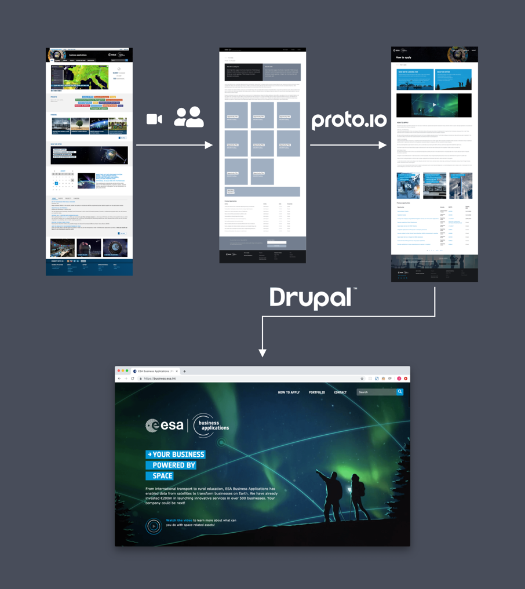
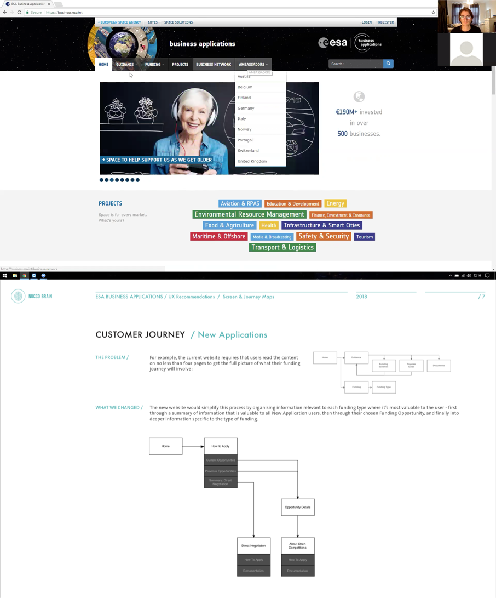
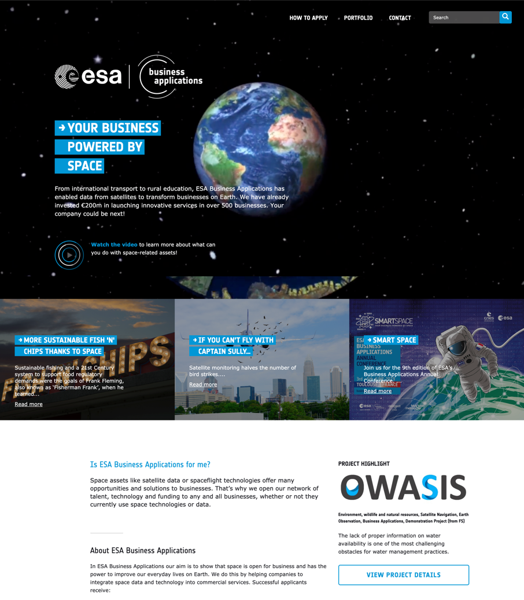
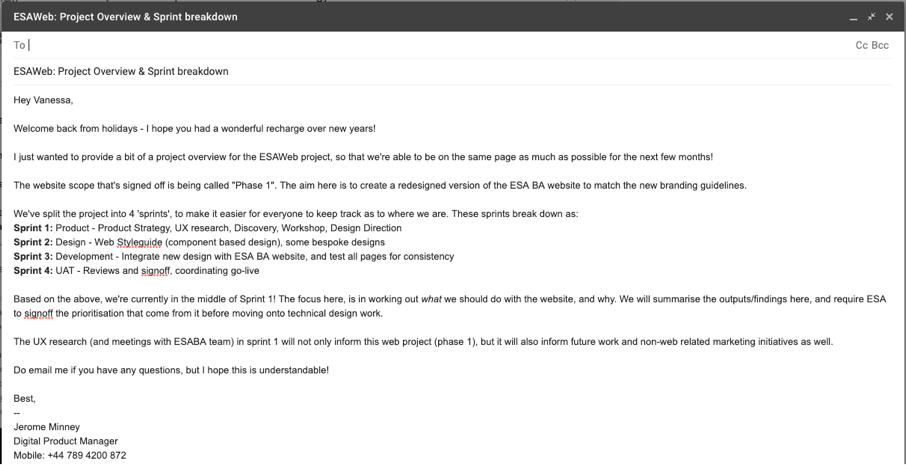

Project Overview
Overview
The European Space Agency | Business Applications were looking to gain a 70% increase in grant applications in the UK.
Calibre were put forward by ESAs Visual Storytelling Studio - Nucco Brain, because we could deliver UX research, onboard a Drupal developer, and work with enterprise-grade development environments.
“Calibre was able to make the project look simple and approachable to external stakeholders, whilst delivering a UX-driven and technically complex project under the hood. There aren’t many studios that could be as flexible and dynamic as Calibre.“
- Natasha Wheatley
- Operations, ESA Business Applications
ABOUT ESA Business Applications
About
ESA Business Applications (ESA BA) awards grant funding to ventures looking to incorporate cutting-edge space technology on earth. The team of 40 is mostly engineers who act as mentors to successful grant applicants.
Highlights
Highlights
When there’s too many good ideas to manage, turn to UX data and then build a strategy.
See how detailed user research can uncover which changes will really contribute to the strategic goal
To bring clarity on what needed to be improved, we started by recording user interviews and sorting the insights into the highest impact, lowest effort changes we could make on the website.
Thanks to our rapid prototyping and feedback processes, our wireframes received input from engineering, copywriting, design, and marketing, which meant full stakeholder buy-in to a solution that would get the key messages across to our users.
When you’re designing for a brand like the Space Agency, let people aspire to be part of the story
See how users are now able to imagine themselves in one of ESA’s venture-success stories
In the process of extending their (print) brand guidelines into web to redesign their website, we jumped on a bigger opportunity.
We collaborated with Nucco Brain (their Visual Storytelling Studio) to incorporate stylised illustrations instead of photography, thereby tapping into an age-old storytelling technique to invite the user to imagine themselves being part of the story. This is particularly valuable when you’re an aspirational brand like the space agency, and your strategic goal is encourage more people to apply for grant applications.
When collaborating with 5 other companies, clear communication and reporting is critical
See how we improved the signal to noise ratio for all stakeholders
As boring as reporting may sound, it gets pretty important on a project with 27 stakeholders. For a project like this, it’s crucial to identify the main point of contact at each company, the core stakeholders, and the wider stakeholders.
From there on, clear communication requires a consistent format, vocabulary, and project plan. People can more easily keep on top of what’s going on if you cut the noise out of a message.
UX Rule of 5
If you’re carrying out user research, you get a statistically significant enough sample by testing with just 5 users.
There’s some clever stats behind it, outlined in this InVision article. We recommend reading it if you want to understand why, or know when your particular case calls for a different number of users to test with.
We were able to collaborate with 5 other companies to deliver a data-driven redesign, development, and launch. [Review traffic data to surface some numbers too]
Could you achieve business results through a strategic approach to redesigning your website?